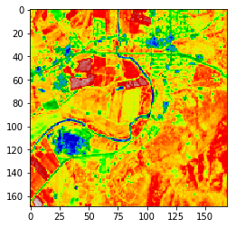

Calculating NDVI¶
In [1]:
from pyrasterframes import *
from pyrasterframes.rasterfunctions import *
from pyspark.sql import *
from pyspark.sql.functions import udf
from pathlib import Path
import matplotlib as mpl
import matplotlib.pyplot as plt
import matplotlib.image as mpimg
import numpy as np
spark = SparkSession.builder. \
master("local[*]"). \
appName("RasterFrames"). \
config("spark.ui.enabled", "false"). \
getOrCreate(). \
withRasterFrames()
resource_dir = Path('./samples').resolve()
In [2]:
redBand = spark.read.geotiff(resource_dir.joinpath('L8-B4-Elkton-VA.tiff').as_uri()).withColumnRenamed('tile', 'red_band')
nirBand = spark.read.geotiff(resource_dir.joinpath('L8-B5-Elkton-VA.tiff').as_uri()).withColumnRenamed('tile', 'nir_band')
In [4]:
# shouldn't those values be switched? Why is the mean of the normalized difference above 1?
rf = redBand.asRF().spatialJoin(nirBand.asRF()) \
.withColumn("ndvi", normalizedDifference(convertCellType('nir_band', 'float32'), convertCellType('red_band', 'float32'))).asRF()
rf.select(tileStats('ndvi')).show(1, False)
+---------------------------------------------------------------------------------------+
|tileStats(ndvi) |
+---------------------------------------------------------------------------------------+
|[28561,-0.10896296054124832,0.669983446598053,0.45550015129027654,0.010856412948156034]|
+---------------------------------------------------------------------------------------+
In [20]:
rf.select(cellType('ndvi')).show()
+------------------------+
|celltypeexpression(ndvi)|
+------------------------+
| float32|
+------------------------+
In [21]:
pixels = np.reshape(np.asarray(rf.select(tileToDoubleArray('ndvi')).first()), (-1, 169))
In [ ]:
rfpixels = rf.toDoubleRaster('ndvi', 169, 169)
In [27]:
Out[27]:
['__call__',
'__class__',
'__delattr__',
'__dir__',
'__doc__',
'__eq__',
'__format__',
'__func__',
'__ge__',
'__get__',
'__getattribute__',
'__gt__',
'__hash__',
'__init__',
'__init_subclass__',
'__le__',
'__lt__',
'__ne__',
'__new__',
'__reduce__',
'__reduce_ex__',
'__repr__',
'__self__',
'__setattr__',
'__sizeof__',
'__str__',
'__subclasshook__']
In [23]:
rf.select(tileDimensions('ndvi')).show()
+---------------+
|dimension(ndvi)|
+---------------+
| [169,169]|
+---------------+
In [22]:
imgplot = plt.imshow(pixels)
imgplot.set_cmap('nipy_spectral')

In [ ]:
spark.stop()